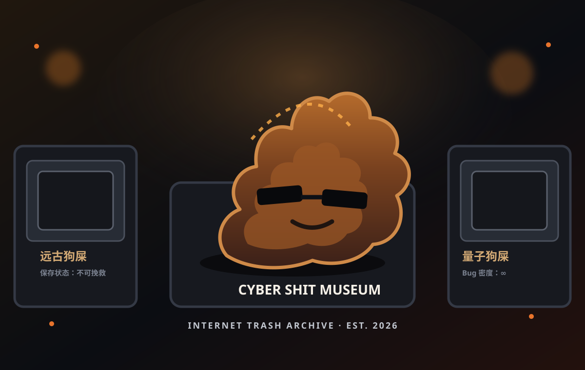

LIFE ENCYCLOPEDIA · INTERNET TRASH ARCHIVE
互联网臭狗屎博物馆 🌚
人类互联网迷惑行为考古现场。极臭、恶臭、逆天发言、政治抽象、黑色幽默，统统分类入馆。
🟢 原图优先
🟡 复原图兜底
💩 1940+ 馆藏

馆长视觉档案 · 原创 SVG 插画 · 纯属赛博艺术污染
0
件展品
0
个分类
0
件馆藏级污染
ARCHIVE STATUS · ONLINE
动态图片考古
单件档案可分享
⭐ 收藏保存在本机
CURATOR'S PRIVATE TRASH PIT
💩 馆长私人垃圾堆
下面这些是本馆原创虚构展签，专门负责给互联网体面人士制造精神噪音。
原创·虚构·不代表现实
“应该可以运行吧。”
技术狗屎 · 自信指数 100%
“README 比项目完整。”
文档艺术 · 功能待实现
“优化：再加一个 if。”
架构污染 · 无限循环
“测试全绿，用户全红。”
质量保证 · 经典标本
“Bug 修好了，刷新一下。”
祖传玄学 · 适用于部分宇宙
“TODO：以后再做。”
产品考古 · 半衰期 7 年
⌕
🎲 随机抽一坨
⭐ 我的馆藏 (
0
)
🕘 最近看过 (
0
)
🎛️ 馆藏筛选
重置
臭度
全部
馆藏级污染
逆天
极臭
恶臭
有点臭
轻度污染
排序
默认馆藏顺序
臭度最高
臭度最低
标题 A-Z
🎛️ MUSEUM AUDIO ARCHIVE
SHIT SYMPHONY 01
加载完成 · 点击后开始 · 原创 Web Audio
💩 播放大便交响曲
音量
🗑️ 馆长声明
这里可以很臭，但不胡编。梗图优先从 Wikimedia Commons 动态检索，使用专门的关键词别名和结果评分；匹配置信不足就老实显示“驴头不对马嘴”，并给出手动考古入口。
🌚 这片垃圾场暂时没搜到东西。
×
×
⭐ 我的馆藏
×
🕘 最近看过